Computer network--MAC子层
本文最后更新于：August 14, 2020 pm
计算机网络课程-MAC子层总结
网络链路可以分成两类
- 点到点连接[PPP协议]
- 广播信道
1. 信道分配问题
1.1静态信道分配
在多个竞争用户之间分配单个信道的传统做法是把信道容量拆开分给多个用户使用
1.2 动态信道分配
1.2.1 关键假设
流量独立
模型由N个独立的站组成，每个站都有一个程序或者用户要传输的帧。在长度为$\Delta t$的间隔内，期望产生的帧数是$\lambda \Delta t$。这里的$\lambda$为常数(新帧的到达率)。
单信道
所有的通信都用这一个信道
冲突可观察
如果两帧同时传输，则他们在时间上就有重叠，产生混乱的信号，这就是冲突。所有的站都能检测到冲突。冲突的帧必须在以后再次被发送
[冲突的话会发送站点会检测到增强的信号
时间连续或分槽
时间可以假设连续：任意时刻都可以开始传输帧
时间可以分槽（离散）
载波侦听或不听
1.2.2 多路访问协议
i. 纯ALOHA
思想:
有数据要发就发送
如果帧破坏了，则发送方等待一个随机时间后再次发送
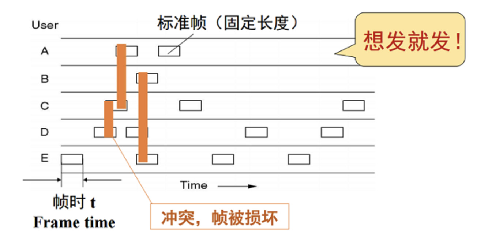
帧时[frame time]
传输一个标准的、固定长度的帧需要的时间[帧的长度/比特率]
假定站产生的新帧可以模型化为一个平均每“帧时”产生 N 个帧的泊松分布
出了新生成的帧外，每个站还会产生由于先前遭受冲突而重传的那些帧
进一步假设在每个“帧时”中，老帧和新帧合起来也符合泊松分布，每个帧时的平均帧数是G，显然$G\geq N$
参数定义
- 帧时T[..frame length/bit rate]：发送一个标准长的帧所需的时间
- 吞吐率Throughput S：在一个帧时T内发送成功的平均帧数（0<S<1，S=1时信道利用率100%）
- 运载负载Offered load G：一个帧时T内所有通信站总共发送的帧平均值（包括原发和重发帧）（G≥S，G=S表示无冲突）
- P0：一帧发送成功（未发生冲突）的概率，发送成功的分组在已发送分组的总数中所占的比例；公式：$S = G\times P0$
如何计算P0
冲突危险期：2T[2个帧时]
在这个危险期，生成帧的均值为2G
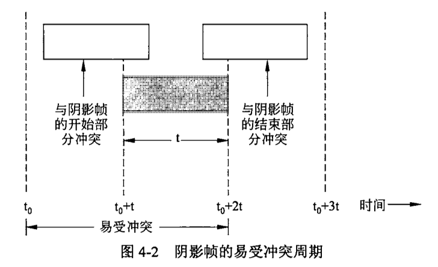
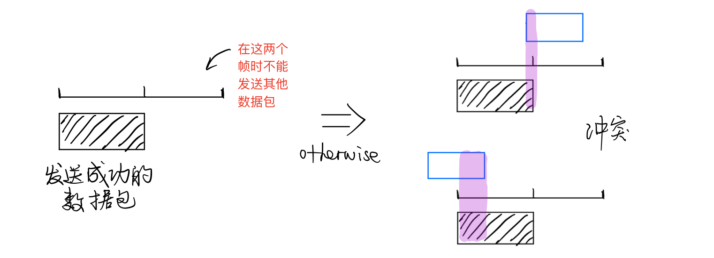
在2T时间内发送成功的概率=2T时间内没有其他帧生成的概率
$P_0=\frac{(G\cdot 2)^0e^{-G\cdot 2}}{0!}=e^{-2G}$
$S=GP_0=Ge^{-2G}$
ii. 分槽ALOHA
思想
时间离散化
必须要等到一个时间槽点开始时刻才能发送帧
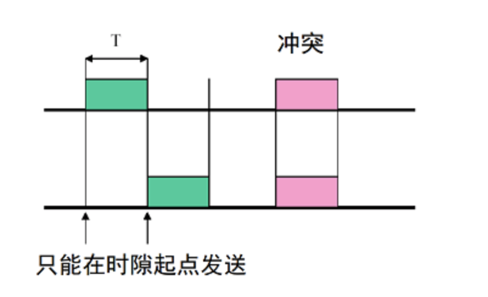
性能如何？
只需要在当前帧时没有其他站发送帧就可以保证一个帧发送成功
$P_0=\frac{(G\cdot 1)^0e^{-G\cdot 1}}{0!}=e^{-G}$
$S=GP_0=Ge^{-G}$
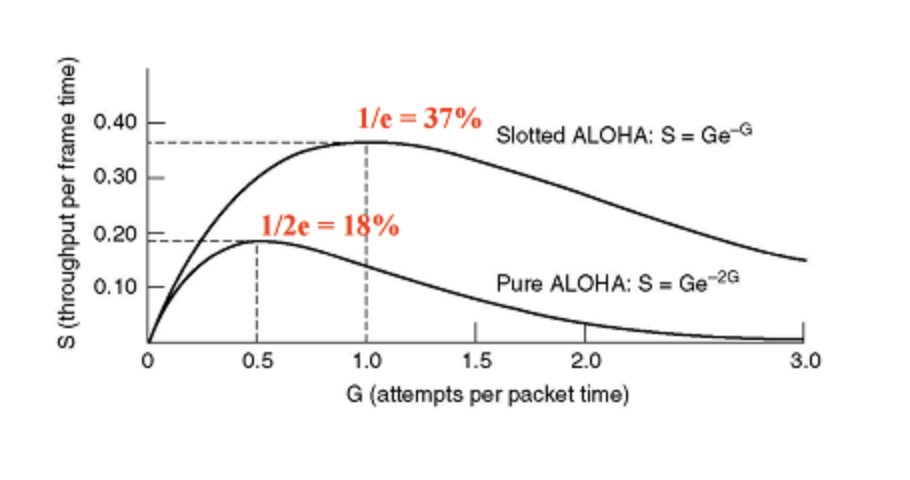
1.2.3 载波侦听多路访问协议
上面两种属于不听就说
下面我们可以尝试先听再说的方式[发送帧之前检测信道中是否有数据在发送]
i. CSMA[Carrier sense multiple access] without CD[collision detection]
A. Persistent CSMA[1-persistent]
- If the channel is idle, the station transmits a frame.
- If the channel is busy, the station waits until it becomes idle. Then the station transmits a frame.
- If a collision occurs, the station waits a random amount of time and starts all over again.
这个协议也叫1-persistent，因为不停地去sense信道，只要信道空闲就能发现。当新到空闲时，他传输数据的概率为1。问题是，如果两个station都在等待信道，那么当信道空闲时，他们同时发送，这必然产生冲突
B. Non-persistent CSMA
If the channel is idle, the station transmits a frame.
If the channel is in use, the station does not continually sense it. Instead, it waits a random period of time and then repeats the algorithm.
If a collision occurs, the station waits a random amount of time and starts all over again.
这种方式信道利用率比1-persistent高，但是比1-persistent的delay时间长
C. p-persistent CSMA
Applied to slotted channels
- If the channel is idle, it transmits with a probability p. With a probability q=1-p, it defers until the next slot.
- If that slot is also idle, it either transmits or defers again, with probabilities p and q.
- This process is repeated until either the frame has been transmitted or another station has begun transmitting.
- If the channel is busy, it waits until the next slot and applies the above algorithm.
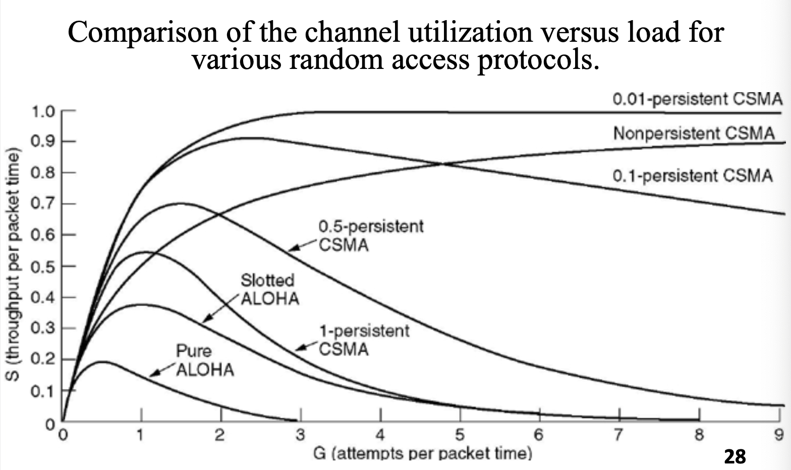
ii. CSMA with CD
思想
As soon as stations detect a collision, they stop their transmissions
CSMA/CD可以出于以下几种状态
- contention
- transmission
- idle
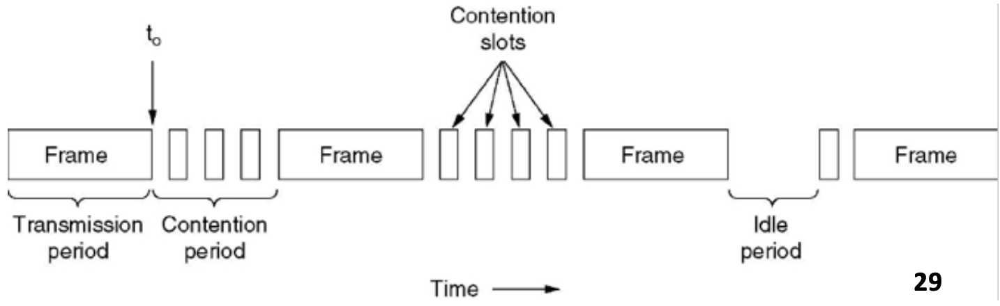
竞争算法：
假设两个站同时在t0时刻开始传送数据，他们需要多长时间才能意识到发生冲突呢？ 2$\tau$
因此，将CSMA/CD竞争看成一个分槽ALOHA系统，时间槽宽度为$2\tau$
CSMA/CD 和分槽 ALOHA 的区别在于， 只有一个站能用来传输的时间槽（即信道被抓住了）后面紧跟的那些时间槽被用来传输该帧的其余部分。如果帧时相比传播时间长很多，这种差异将能大大提高协议的性能。
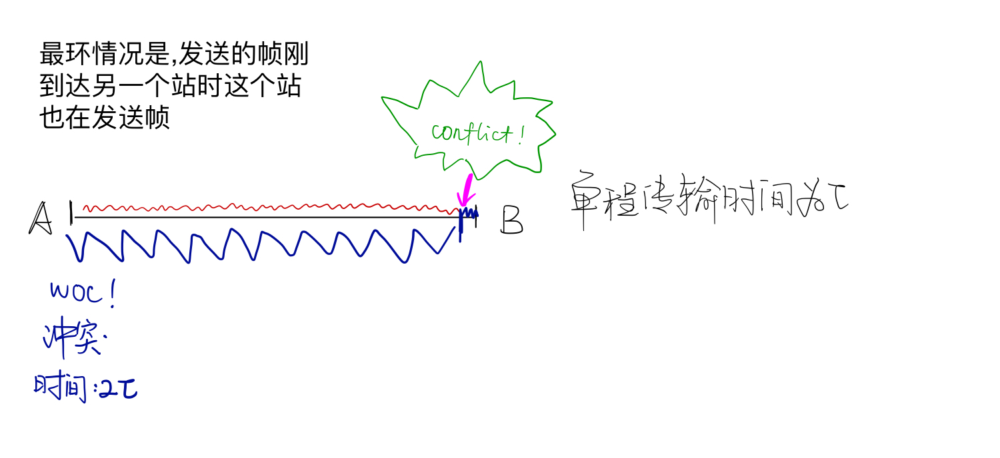
1.2.4 无冲突协议
i. 位图协议
一共有N个station，每个竞争期包含N个槽。如果0号station有一帧要发送，那么他在0号槽中传输1位。这个槽不允许其他station发送。
当所有N个槽都经过后，每个站都知道哪些站希望传送数据。
这是，按照数字顺序开始传送数据
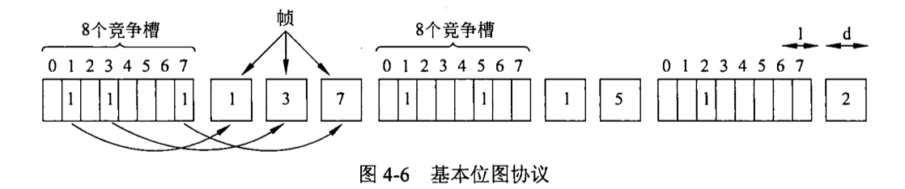
每个站都同意下一个是谁传输，所以永远不会发生冲突
当最后一个就绪站传送完它的帧后，另一个N位竞争期又开始了
Notations
- The time unit is one contention bit
- N: contention period
- d: data frame length
性能分析
- low load
- for low-numbered stations ,比如0，1
如果当这个station做好发送数据的准备时，当前槽出于位图中间的某个地方，那么这个station需要等待完成当前扫描的N/2个槽，在等待完成下一次扫描的另外N个槽，然后才能开始传输数据
如果处于开头的话，一种情况是刚好轮到他的槽，那么等待N就可以；一种情况是错过他的槽，那么他要等过这N次以及下个N个槽。平均为1.5
等待时间为1.5N
- for high-numbered stations, 比如上图6,7
要么刚好轮到他不等，要么刚好错过他等N
平均等待0.5N个槽
平均而言，delay for all stations is N
信道利用率为: $\frac{d}{N+d}$ 每一帧的额外开销是N位，数据长度为d位
- high load
the 𝑁 bit contention period is distributed over 𝑁 frames, yielding an overhead of only 1 bit per frame,
the efficiency: $\frac{𝑑}{d + 1}$
ii. token passing
令牌代表发送权限，令牌以预定义的顺序从一个站传到下一个站
如果站有个等待传输的帧队列，当他接收到令牌就可以发送帧，然后再把令牌传递到下一站；如果没有帧要传，则只是简单把令牌传递下去
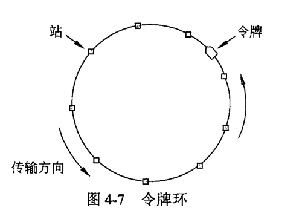
iii. Binary Countdown
1.2.5 有限竞争协议
目前为止
- Methods with contention
- Under low load, the contention method (i.e., pure or slotted ALOHA, CSMA) is preferable due to its low delay.
- Under high load, the contention method becomes increasingly less efficient.
- Methods without contention
- Under low load, the collision-free method has high delay.
- Under high load, the collision-free method becomes increasingly more efficient.
综合他们的优点缺点，提出limited-contention protocols
有限竞争协议在低负载下来用竞争的做法而提供较短的延迟，但在高负载下来用无冲突技术， 从而获得良好的信道效率
Adaptive Tree Walk
把站看作二叉树的叶节点
在一次成功传送之后的第一个竞争槽，即 0 号槽中，允许所有的站尝试获取信道。
如果它们之中的某一个获得了信道，则很好；如果发生了冲突，则在1号槽中， 只有位于树中 2 号节点之下的那些站才可以参与竞争。
如果其中的某个站获得了信道，则 在该站发送完一帧之后的那个槽被保留给位于节点 3 下面的那些站。
另一方面，如果节点 2 下面的两个或者多个站都要传输数据，则在 1 号槽中就会发生冲突，此时，下一个槽， 即 2 号槽就由位于节点 4 下面的站来竞争。
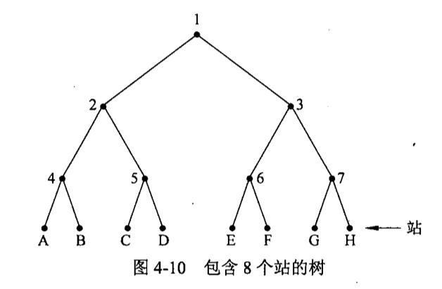
1.2.6 无限局域网协议
假设每个无线电发射器有某个固定的传播范围，用一个圆形覆盖区域表示，在这区域内的另一个站可以侦听并接收该站的传输
隐藏终端问题
假设有3无线通信站ABC如下所示：
A B - C其中B在C的无线电波范围内，但A不在C的无线电波范围内。此时C正在向B传送数据，而A也试图向B传送数据。此时，A不能够监听到B正在忙（因为A在监听信道的时候什么也听不到，所以它会错误的认为此时可以向B传送数据了）。如果A向B传送数据，则将导致错误。此即隐藏站问题。其中C是A的隐藏站。
暴露终端问题
假设有3无线通信站ABC如下所示：
-A B C其中B在A的无线电波范围内，但C不在A的无线电波范围内。此时A正在传送数据（向除B以外的某通信站），而B希望给C发送数据，但是错误地认为该传送过程将会失败（因为B会监听到一次传输，所以它会错误地认为此时不能向C发送数据）。此即暴露站问题。其中A是B的暴露站
冲突避免多路访问（MACA, Multiple Access with Collision Avoidance)
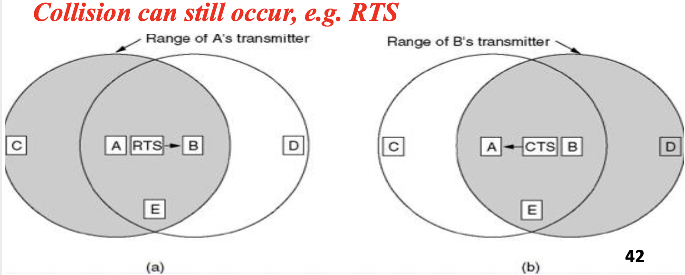
考虑A如何向B发送一帧。
A首先给B发送一 个 RTS (Request To Send帧)，这个短帧 (30 字节）包含了随后将要发送的数据帧的长度
然后， B 用一个 CTS (Clear to Send ）作为应答， 此 CTS 帧也包含了数据长度（从 RTS 帧中复制过来）。 A 在收到了CTS 帧之后便开始传输。
现在我们来看，如果其他站也听到了这些帧，它们会如何反应。
- 如果一个站听到了 RTS 帧，那么它一定离 A 很近，它必须保持沉默，至少等待足够长的时间以便在无冲突情况下 CTS 被返回给 A
- 如果一个站听到了 CTS ，则它一定离 B 很近，在接下来的数据传送过程 中它必须一直保持沉默，只要检查 CTS 帧，该站就可以知道数据帧的长度（即数据传输要持续多久）。
但是这样仍然可能发生冲突：B 和 C 可能同时给 A 发送 RTS
这种方法对隐藏终端比较有效，无助于暴露终端问题
2. 以太网
2.1 经典以太网物理层
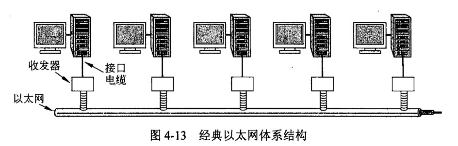
采用Machester encoding
Differential Manchester encoding :
时钟的频率是比特率的两倍，也就是在一个bit 时间内，时钟会产生一次跳变。时钟XOR bit，产生输出
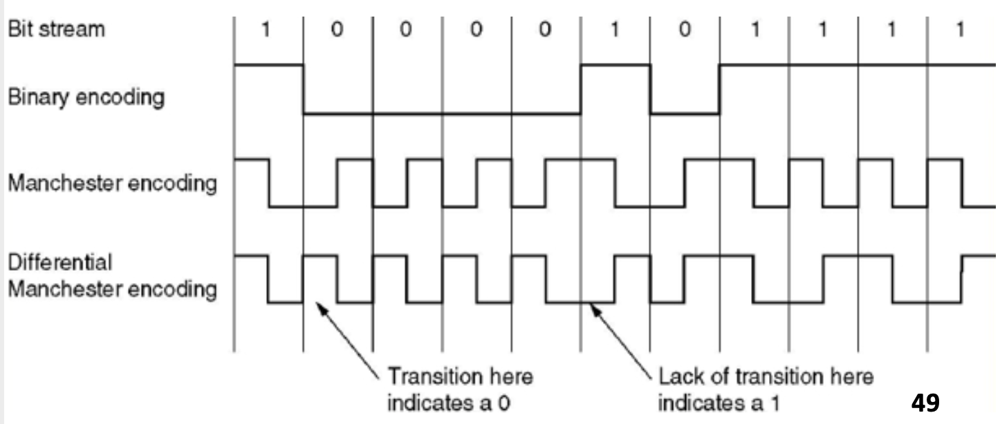
第一个bit时间t内，传输的bit是1，时钟在[0,t/2]内是0，与bit 1异或，编码成1;
在[t/2, t]内时钟跳变到1，与bit 0异或，编码成0.
因此我们在第一个bit时间看到的编码先是1后翻转到0
问题：需要两倍于NRZ的带宽，一个bit时间他要传输两个信号
2.2 经典以太网MAC子层协议
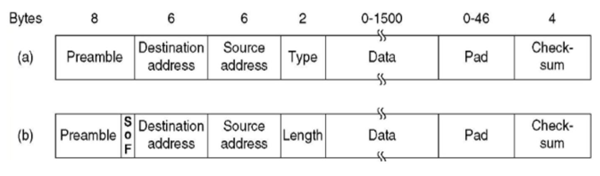
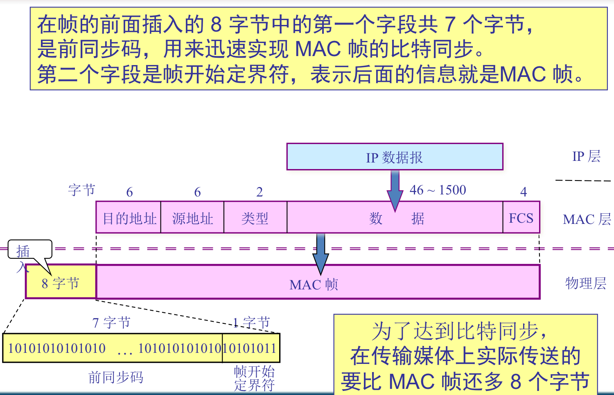
这里有效帧长必须>=64字节
减去目的地址原地址类型和checksum之后，数据部分部分>=46字节
因为争用期为$2\tau$，通常取为51.2us
对于10Mb/s以太网，在争用期可以发送512bit，也就是64字节
使用CSMA/CD, 直到信道空闲才会发送帧
如果两个站同时发送数据，则在$2\tau$时间内会检测到冲突。也就是在前64个字节就可以检测到冲突。如果前64个字节不冲突，则就不会冲突。
二进制指数后退[binary exponential backoff]的CSMA/CA
这个协议确定了随机等待时间
一个时间槽为$2\tau$, 基本退避时间为$2\tau$
第一次冲突发生后，每个站随机等待 0 个或者 1 个时间槽，之后再重试发送。如果两个站冲突之后选择了同一个随机数，那么它们将再次冲突。在第二次冲突后，每个站随机选择等待0、1、2或3个时间槽 。如果第三次冲突又发生了（发生的概率为 0.25 ），则下一次等待的时间槽数从 0 到 $2^3-1$ 之间随机选择。
达到 10 次冲突之后，随机数的选择区间被固定在最大值 1023 ，以后不再增加。 在 16 次冲突之后，控制器放弃努力，并给计算机返回一个失败报告 。
总而言之，如下

实质：
冲突的次数大概能确定要发送的站的数量，二进制退避快速收敛到适应的数量
2.3 Switched Ethernet交换式以太网
在集线器中，所有站都位于同一个冲突域 (collision domain), 它们必须使用 CSMA/CD 算法来调度各自的传输。在交换机中，每个端口有自己独立的冲突域。
In a hub, all stations are in the same collision domain; while in a switch, each portis a collision domain.
通常情况下，电缆是全双工的[同时允许两个方向发送数据]，站和端口可以同时往电缆上发送帧，根本无须担心其他站或者端口。现在冲突不可能发生，因而 CSMA/CD 也就不需要了。然后，如果电缆是半双工的[同时只允许一个方向发送数据]，则站和端口必须以通常的 CSMA/CD 方式竞争传输。

交换机的性能优于集线器有两方面的原因。
- 由于没有冲突，容量的使用更为有效。
- 有了交换机可以同时发送多个帧（由不同的站发出〉。这些帧到达交换机端口井穿过交换机背板输出到适当的端口。然而，由于两帧可能在同一时间去往同一个输出端口，交换机必须有缓冲，以便它暂时把输入帧排入队列直到帧被传输到输出端口。
不可能做到的。系统总吞吐量通常可以提高一个数量级，主要取决于端口数目和流量模式。
2.4 Fastethernet[100Mbps]
802.3u
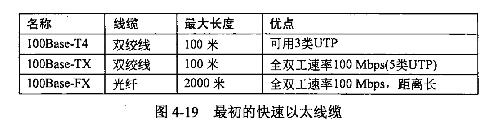
2.5 Gigabit Ethernet[1Gbps]
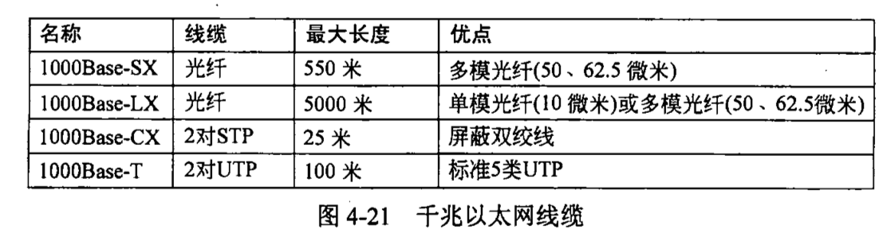
2.6 10 Gigabit Ethernet[10Gbps]
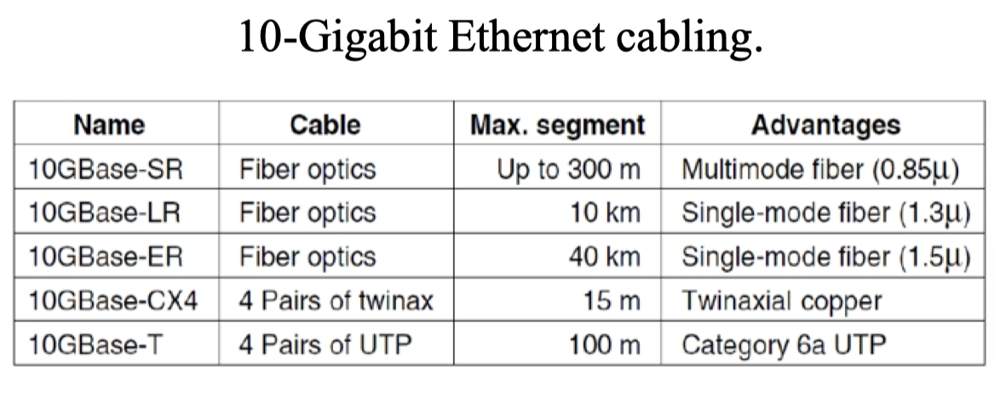
3. 无限局域网
3.1 The 802.11: Architecture and Protocol Stack
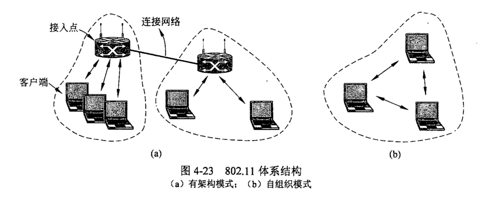
802.11 网络的使用模式有两种：
- 最普遍使用的把客户端（比如笔记本电脑和智能手机客户端），连接到另一个网络（比如公司内联网或 Internet ）。这种使用模式如图 (a) 所示。在有架构模式下，每个客户端与一个接入点（ AP, Access Point ）关联，该接入点又与其他网络连接。客户端发送和接收数据包都要通过 AP 进行。几个接入点可通过一个称为分布式系统（ distribution system ）的有线网络连接在一起，形成一个扩展的 802.11 网络。 在这种情况下，客户端可以通过它们的接入点向其他客户端发送帧。
- 另一种模式，如图 4-23 (b ）所示，是一种自组织网络（ ad hoc network ）。这种模式下 的网络由一组相互关联的计算机组成，它们相互之间可以直接向对方发送帧。这里没有接入点。由于 Internet 接入是无线的杀手级应用，自组织网络并没有那么受欢迎。
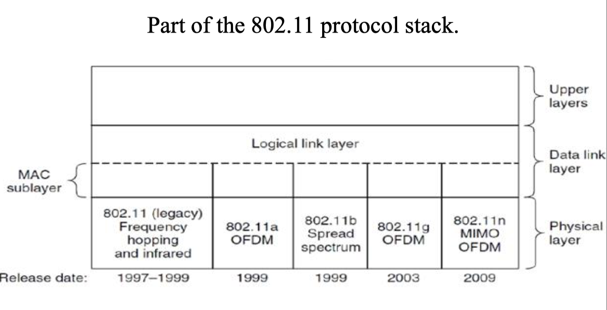
所有 802 协议的数据链路层分为两个或更多个子层。在 802.11 中
- 介质访问控制（MAC, Medium Access Control) 子层决定如何分配信道，也就是说下一个谁可以发送。
- 在它上方的是逻辑链路控制（ LLC, Logical Link Control) 子层，它的工作是隐藏 802 系列协议之间的差异，使它们在网络层看来并无差别。
3.2 The 802.11: Physical Protocol
- 802.11: FHSS(Frequency Hopping Spread Specture) and Infrared[2.4Mbps]
- 802.11a: OFDM(Orthogonal Frequency Division Multiplexing) at 5GHz (54Mbps)
- 802.11b: HR-DSSS (High Rate Direct Sequence Spread Spectrum) (11Mbps)
- 802.11g: OFDM(Orthogonal Frequency Division Multiplexing) at 2.4 GHz (54Mbps)
- 802.11n: MIMO OFDM (Multiple-Input Multiple-Output Orthogonal Frequency Division Multiplexing) at multiple frequencies. (600Mbps)
3.3 The 802.11: Sublayer Protocol
A. 问题1
无线电几乎总是半双工的，这意味着它们不能在一个频率上传输的同时侦听该频率上的突发噪声。接收到的信号很容易变得比发射信号弱上一百万倍，因此它无法在同一时间听到这么微弱的信号。而在以太网中，一个站只要等到介质空闲，然后开始传输。 如果它没有在发送的前 64 个字节期间收到返回的突发噪声，则几乎可以肯定帧能正确地传送出去。但对于无线介质，这种冲突检测机制根本不起作用。
因为冲突检测不起作用，所以802.11尝试避免冲突。采用的协议为带有冲突避免的CSMA/CA，CSMA with collision avoidance.
解决方式：CSMA/CA
通过侦听确定在一个很短的时间内[这段时间称为 DIFS ]没有信号：然后倒计数空闲时间槽
当有帧在发送时暂停该计数器：当计数器递减到 0, 该站就发送自己的帧。
- 如果帧发送成功，目标站立即发送一个短确认。
- 如果没有收到确认， 则可推断出传输发生了错误，无论是冲突或是其他什么错。在这种情况下，发送方要加倍后退选择的时间槽数，再重新试图发送。如此反复，连续像以太网那样以指数后退，直到成功发送帧或达到重传的最大次数。
下图给出了一个发送帧的时序例子。
A 站首先发出一个帧。
当 A 发送时， B 站和 C 站准备就绪发送。它们看到信道正忙，便等待它变成空闲。不久， A 收到一个确认，信道进入空闲状态。
然而，不是两个站都发出一帧从而立即产生冲突，而是 B 站和 C 站都执行后退算法。 C 站选择了一个较短的后退时间，因而先获得发送权。 B 站侦听到 C 在使用信道时暂停自己的倒计时，并在 C 收到确认之后立即恢复倒计时。一旦 B 完成了后退，立即发送自己的帧。
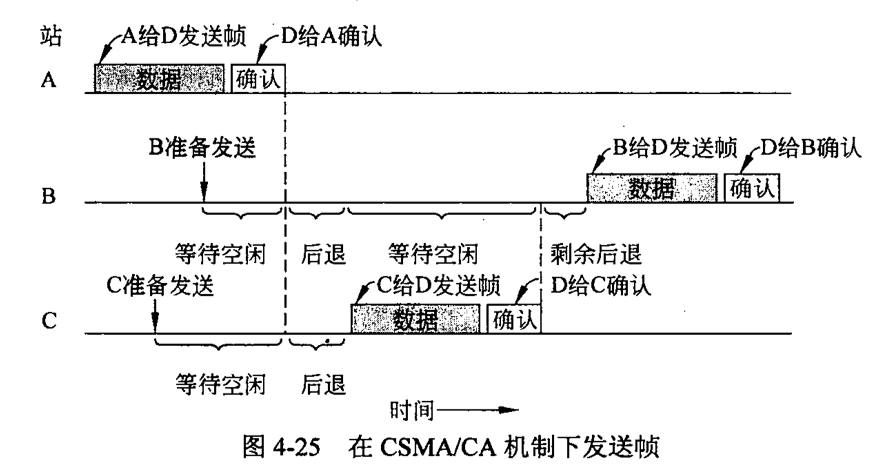
802.11和以太网有两个主要区别
- 首先，早期的后退有助于避免冲突。冲突避免在无线传输中非常重要，即使只发生一个冲突因为整个帧都被传输了出去，因此冲突的代价非常昂贵。
- 其次，利用确认来推断是否发生冲突，因为冲突无法被检测出来。
这种操作模式称为分布式协调功能 DCF Distributed Coordination Function。因为每个站都独立行事，没有任何一种中央控制机制。[…标准还包括一个可选的操作模式，称为点协调功能（ PCF, Point Coordination Function）。在这种模式下， AP 控制自己覆盖范围内的一切活动。
B. 问题2: 隐藏暴露终端问题
为了减少究竟哪个站在发送的模糊不清， 802.11 定义信道侦听包括物理侦听和虚拟侦听两部分。
- 物理侦听只是简单地检查介质，看是否存在有效的信号
- 虚拟侦听，每个站可以保留一个信道何时要用的逻辑记录，这是通过跟踪网络分配向量（ NAV, Network Allocation Vector）获得的。每个帧携带一个 NAV字段，说明这个帧所属的一系列数据将传输多长时间。无意中听到这个帧的站就知道无论自己是否能够侦听到物理信号，由 NAV所指出的时间段信道一定是繁忙的。例如，一个数据帧的 NAV 给出了发送一个确认所需要的时间。所有听到该数据帧的站将在发送确认期间推迟发送，而不管它们是否能听到确认的发送。
可选的 RTS/CTS 机制使用 NAV 来防止隐藏终端在同一时间发送。
在下面这个例子中， A 想给 B 发送， C 是 A 范围内的一个站（也有可能在 B 的范围内，但 这并不重要）。 D 在 B 范围内，但不在 A 的范围内。
C A B D
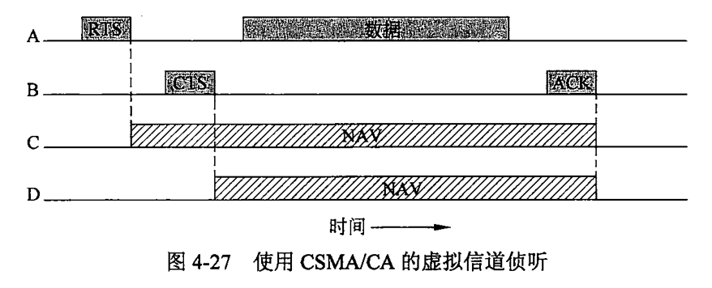
具体的
对A和B来说
- 该协议开始于当 A 决定向 B 发送数据时。 A 首先给 B 发送一个 RTS 帧，请求对方允许自己发送一个帧给它。
- 如果 B 接收到这个请求，它就以 CTS 帧作为应答，表明信道被清除可以发送。
- 一旦收到 CTS 帧， A 就发送数据帧，井启动一个 ACK 计时器。
- 当正确的数据帧到达后， B 用一个 ACK 帧回复 A，完成此次交流。如果 A 的 ACK 计时器超时前， ACK 没有返回，则可视为发生了一个冲突，经过一次后退整个协议重新开始运行。
对C和D来说
C 和 D 的角度来看这次数据交流。 C 在 A 的范围内，因此它可能会收到 RTS 帧。
如果收到了，它就意识到很快有人要发送数据。从 RTS 请求帧提供的信息，可以估算出数据序列将需要传多长时间，包括最后的 ACK。因此，它停止传输任何东西，直到此次数据交换完成。它通过更新自己的 NAV 记录表明信道正忙。
D 无法听到 RTS ，但它确实听到了 CTS ，所以它也更新自己的 NAV。 请注意， NAV 信号是不传输的，它们只是由站内部使用，提醒自己保留一定时间内的安静。
- 可靠性： 无线网络环境嘈杂，并且不可靠，这是因为相当大一部分要受到来自其他种类设备的干扰
增加传输成功概率所用的策略是
降低传输速率。在一个给定的信噪比环境下，速度放慢可以使用更健壮的调制解调技术，帧就越有可能被正确接收。
发送短帧。考虑任何一位都有可能出错，短帧每一位都不出错的概率比长帧高
- 节省电源
- 服务质量
扩展了 CSMA/CA，并且仔细定义帧之间的各种时间间隔。 一帧发出去后，需要保持一段特定时间的空闲以便检查信道不在被用，然后任何站才可以发送帧。
这里的关键就在于为不同类型的帧确定不同的时间间隔。
5 个时间间隔如下图。常规的数据帧之间的间隔称为 DCF 帧间隔 [DIFS, DCF InterFrame Spacing ]。任何站都可以在介质空闲 DIFS 后尝试抓取信道发送一个新帧。采用通常的竞争规则，如果发生冲突或许还需要二进制指数后退。最短的间隔是短帧间间隔( SIFS, Short InterFrame Spacing ）。它允许一次对话的各方具有优先抓住信道的机会。例子 包括让接收方发送 ACK、诸如 RTS 和 CTS 的其他控制帧序列， 或者让发送方突发一系列 段。发送方只需等待 SIFS 即可发送下一段，这样做是为了阻止一次数据交流中间被其他站 横插一帧。
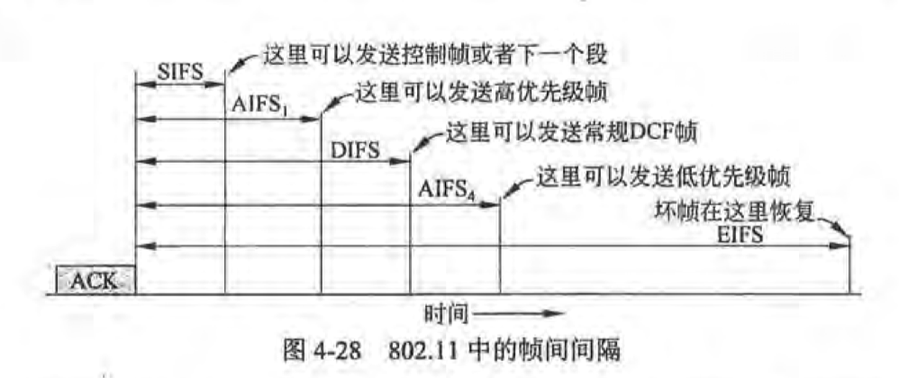
最短的间隔是短帧间间隔( SIFS, Short InterFrame Spacing ）。它允许一次对话的各方具有优先抓住信道的机会
常规的数据帧之间的间隔称为 DCF 帧间隔 (DIFS, DCF InterFrame Spacing ）。任何站都可以在介质空闲 DIFS 后尝试抓取信道发送一个新帧
- 两个仲裁帧间空间（ AIFS, Arbitration lnterFrame Space ）间隔显示了两个不同优先级 的例子。短的时间间隔 AIFS1 小于 DIFS ，但比 SIFS 长。较长的时间间隔 AIFS4 比 DIFS 还大
- 扩展帧间间隔 （EIFS, Extended InterFrame Spacing ） ，仅用于一个站刚刚收到坏帧或未知帧后报告问题
3.4 802.11帧结构
The 802.11 standard defines three different classes of frames:
Data
Control
Management
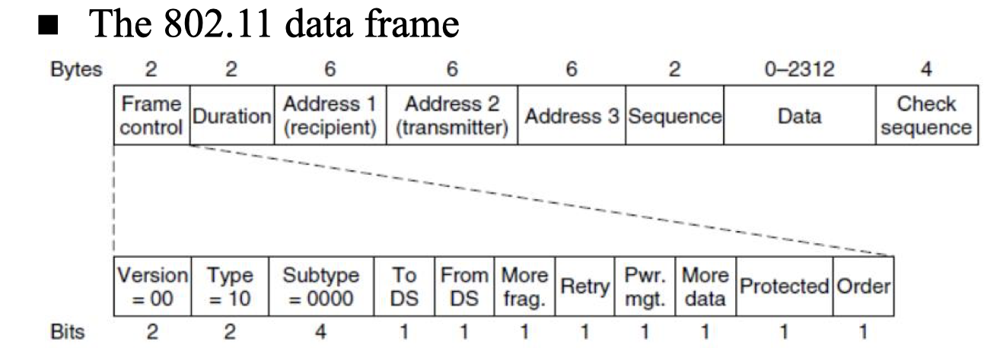
4. Data link layer Switching
网桥工作在数据链路层，因此它们通过检查数据链路层地址来转发帧。
4.1 Uses of Bridges
Why bridges are used?
Different organizations have different LANs, but need communicate.
Different locations have different LANs. Using bridges are cost effective than using a centralized switch.
Multiple LANs are used to accommodate the load.
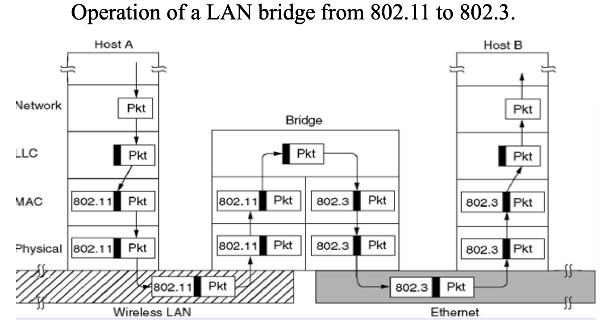
4.2 Learning Bridges
所有附在网桥同一端口的站都属于同一个冲突域，该冲突域和其他端口的冲突域是不同。如果存在多个站，例如传统的以太网、集线器或半双工链路，那么帧的发送需要用到 CSMA/CD 协议。
两个局域网桥接在一起的拓扑结构分两种情况
- 左侧两个多点局域网，比如经典以太网通过一个特殊的站连接在一起，这个站就是同属于两个局域网的网桥。
- 在右侧，局域网用点到点电缆连接在一起，包括一个集线器。
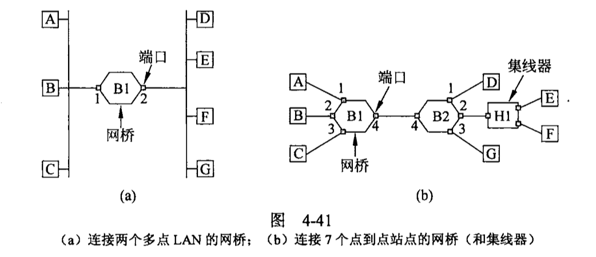
网桥算法
When the first bridges are first plugged in, all the hash tables are empty. None of the bridges know where any of the destinations are, so they use the flooding algorithm.对于每个发向未知目 标地址的入境帧，网桥将它输出到所有的端口，但它来的那个输入端口除外
As time goes on, the bridges learn where destinations are. (backward learning)网桥可以看得到每个端口上发送的所有帧。通过检查这些帧的源地址， 网桥就可获知通过那个端口能访问到哪些机器。例如，上图(b)中，网桥 B1看到端口 3 上的一帧来自站 C，那么它就知道通过端口 3 一定能到达 C ，因此它就在哈希表 中构造一项。以后所有抵达 B1 要去 C 的帧都将被转发到端口 3。
Whenever a frame whose source is already in the table arrives, its entry is updated with the current time. (time updating)
- Periodically, a process in the bridge scans the hash and purges all entries more than a few minutes old. (Aging)
对于一个入境帧，它在网桥中的路由过程取决于它从哪个端口来（源端口），以及它要往哪个目标地址去（目标端口）。整个转发过程如下：
如果去往目标地址的端口与源端口相同，则丢弃该帧。
考虑上图b中，站 E 和 F 都连到集线器 H1，进而再连接到网桥 B2 。如果 E 发送一个帧给 F ，集线器将中继该帧到 B2 以及 F。这就是集线器该做的事情一一它们用有线把所有端口连在一起，这样从一个端口输入的帧只是输出到所有其他端口。该帧最终将从端口 2 到达 B2 ，这正是它到达目的地的正确输出端口。网桥 B2 只需丢弃该帧。
如果去往目标地址的端口与源端口不同，则转发该帧到目标端口。
如果目标端口未知，则使用泛洪法，将帧发送到所有的端口，除了它入境的那个。
4.3 Spanning Tree Bridges
为了提高可靠性，网桥之间可使用冗余链路。在下图所示的例子中，在一对网桥之间并行设置了两条链路。这种设计可确保一条链路岩掉后，网络不会被分成两组计算机， 使得它们之间无法通信。
这种冗余引入了一些额外的问题，因为它生成了拓扑环路。
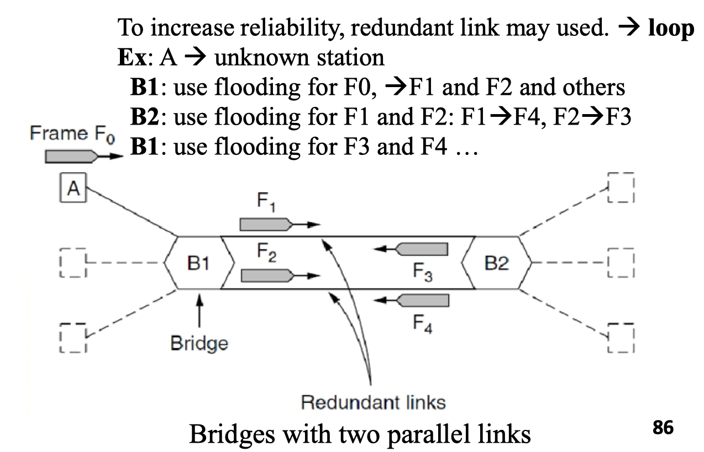
解决环路问题的方法是，构造生成树
5 个网桥互联在一起，同时还有站与这些网桥连接。每个站只与一个网桥相连。在网桥之间有一些冗余连接，因此如果这些链路都用，帧就有可能沿着环路转发。
我们可以将这种拓扑结构抽象成一个图，网桥为节点。点到点的链路是边。 通过去掉一些链路（图中用虚线表示），整个图即被简化为一棵生成树， 按照定义这树上没有环路。利用这棵生成树，从每个站到每个其他站恰好只有一条路径。
一旦网桥同意这棵生成树，则站之间的所有转发都将沿着这棵树进行。由于从每个源到每 个目标都只有唯一一条路径可走，所以不可能产生环路。
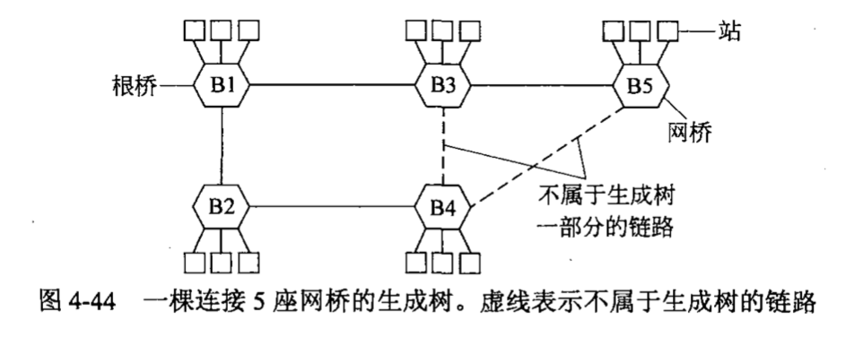
4.4 中继器／集线器／网桥／交换机／路由器和网关
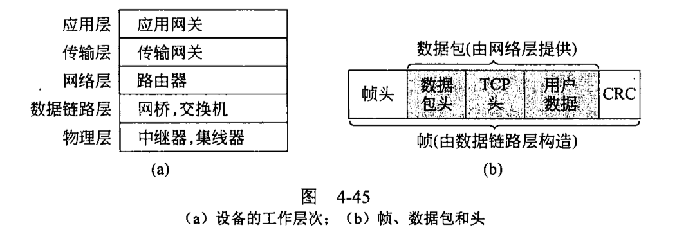
物理层：
A. Repeater中继器
用来在物理层放大信号
B. Hub集线器
集线器有许多条输入线路，它将这些输入线路连接在一起。从任何 一条线路上到达的帧都被发送到所有其他的线路上。如果两帧同时到达，它们将会冲突。
数据链路层
A. 网桥/交换机
与集线器不同的是网桥的每个端口被隔离成它 自己一个冲突域：如果端口是全双工的点到点线路，则需要用到 CSMA/CD 算法。当到达 一帧时，网桥从帧头提取出帧的目的地址，并用该地址查询一张应该把帧发往哪里去的表。
4.5 VLAN
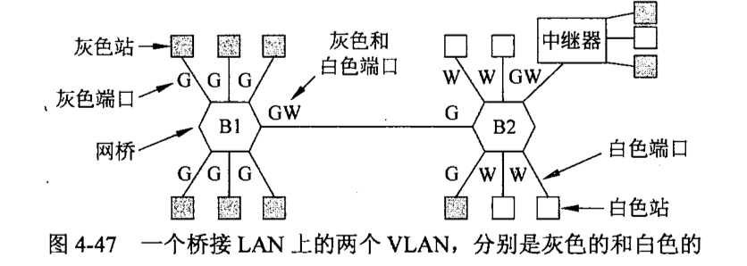
为了使VLAN正常地运行，网桥必须建立配置表。这些配置表指明了通过哪些端口可以访问哪些VLAN。当一帧到来时，比如说来自灰色VLAN，那么这帧必须被转发到所有标记为 G 的端口。这一条规则对于网桥不知道目的地位置的普通流量（即单播）以及组播和广播流量都适用。注意，一个端口可以标记为多种VLAN颜色。
refences
本博客所有文章除特别声明外，均采用 CC BY-SA 4.0 协议 ，转载请注明出处！